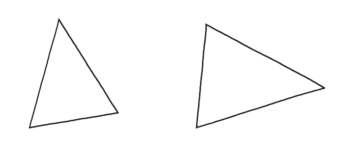
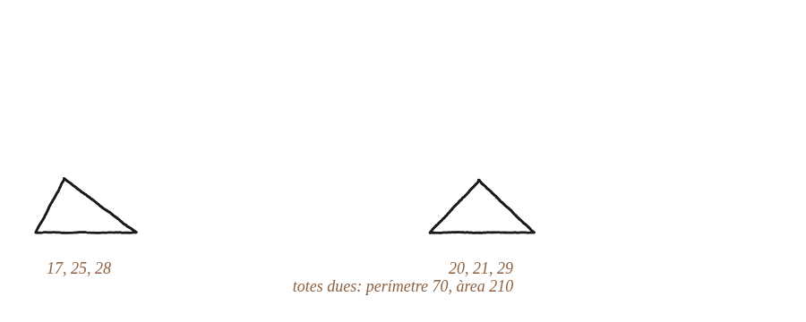

Pots trobar dos triangles diferents amb la mateixa àrea i el mateix perímetre?

El que cal produir: un contraexemple
Trobar dos triangles no congruents (costats diferents) amb exactament la mateixa àrea i el mateix perímetre ja demostraria alguna cosa important per si sol: que "àrea i perímetre iguals" no determina un triangle únic, a diferència del criteri costat-costat-costat.
Convertir-ho en un problema de nombres
Amb semiperímetre s fix, la fórmula de Heron diu que l'àrea només depèn del producte (s−a)(s−b)(s−c). Anomenant x=s−a, y=s−b, z=s−c, el problema es converteix en: trobar dues ternes diferents de nombres positius (x,y,z) amb la mateixa suma (que ha de valer s) i el mateix producte.
Dues ternes que funcionen
Amb s=35: la terna (18,10,7) suma 35 i multiplica 1.260; dona els costats (a,b,c)=(s−18,s−10,s−7)=(17,25,28). Buscant una altra terna amb la mateixa suma i el mateix producte: (15,14,6) també suma 35 i també multiplica 1.260; dona els costats (20,21,29).

Comprovar-ho amb Heron
Triangle (17,25,28): àrea = √(35×18×10×7) = √44.100 = 210. Triangle (20,21,29): àrea = √(35×15×14×6) = √44.100 = 210 també. Dos triangles genuïnament diferents —cap costat en comú—, amb exactament la mateixa àrea i el mateix perímetre.
Sí: (17,25,28) i (20,21,29) són dos triangles no congruents amb el mateix perímetre (70) i la mateixa àrea (210). Surten de buscar dues ternes diferents (x,y,z) amb la mateixa suma i el mateix producte, ja que la fórmula de Heron converteix el problema geomètric en un de purament numèric. A diferència del criteri SSS, dues dades (àrea i perímetre) no basten per fixar un triangle de manera única.
Comprovació
(17,25,28): perímetre 70, àrea √(35·18·10·7)=√44.100=210. (20,21,29): perímetre 70 també, àrea √(35·15·14·6)=√44.100=210 també.